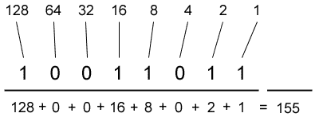
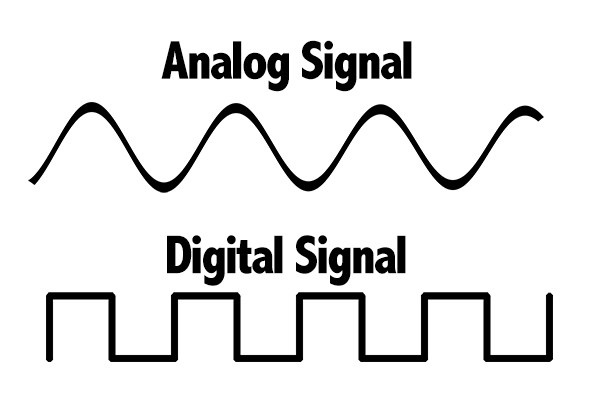
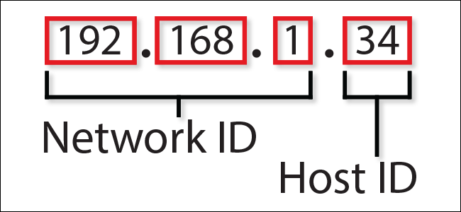
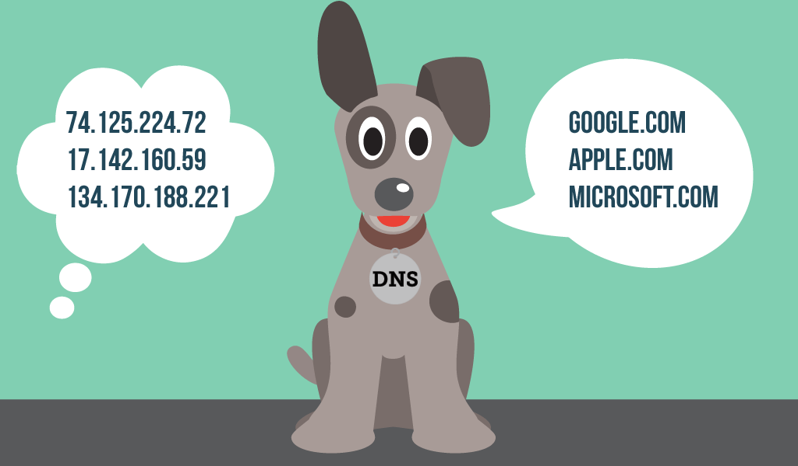

Binary is a number system that can represent lots of data even though it only uses 1's and 0's to do so. The computers we use today run on this binary number system of 0's and 1's. It uses multiples of 2's starting from 1 as the value represented through the 1's and 0's (1, 2, 4, 8, 16, 32, etc.). A decimal number can be converted into binary if the valued represented by binary digits add to the decimal value. Lets look at an example - writing 155 in binary. Only values that add upto 155 will be used (128, 64, 32, 16, 8, 4, 2, 1) - We use 128, 16, 8, 2 and 1 as these add up to 155, so the binary number is written as 10011011.

Note: The number 1 states true and 0 false, or in other words if the value corresponding to 0 or
1 is used or not.
Decimal
Decimal is one of the most used number system which uses 10 numerals - 0, 1, 2, 3, 4, 5, 6, 7, 8, and 9. Decimal can also refer to the dot '.' placed after a number. For example Π = 3.14...
Bits and Bytes
A bit is the smallest unit of data. It has a value of a binary number (0 or 1). Multiple bits together to form a higer measurement of data called a byte. A single byte is equal to 8 bits.
Digital & Analog
A digital object or a signal only has 2 values - 1 or 0 (binary), on or off. A digital signal never has a fractional value. Computers and other technology use digital signals because it provides a constant and consistent signal with no interference. For example, if an mp3 file is copied a large number of times to many devices, the audio will still sound the same on each one without losing any quality.

The image represents an analog pattern (represented as the curve) alongside a digital
pattern (represented as the straight lines).
An analog object or a signal is continuous. For example - when we look around us, everything we
take in is a continuous message to our senses. An analog signal is constantly changing and can have a fractional value. Before digital signals were used in technology, analog signals were used. Nowadays, technology uses digital signals instead because analog signals are not consistent and can have interference. For example, if cassette tapes are copied again and again, the quality of the recording will degrade depending on the number of times it was copied.
IP Address
An IP address is a unique address given to a device so that it can identified on the internet or on a local
network through the Internet Protocol.

There are two different versions of IP addresses – IPv4 and IPv6.
IPv4 & IPv6:
Internet Protocol version 4 (IPv4) is still the most used internet protocol and it also
manages most internet traffic today, although the new - IPv6, is released. Internet Protocol version 6 (IPv6)
will replace IPv4 soon.
An IPv4 address has four sets of numbers from 0 to 255, separated by three dots. For example, the IP of Google
is - 216.58.206.78. This number is used to
identify the Google website on the Internet. When you visit http://google.com in your web browser, the DNS
system automatically translates the domain name "google.com" to the IP address "216.58.206.78".
DNS (Domain Name System)
DNS also known as Domain Name System, provide websites with easy to remember
names. Computers access devices on the internet using the IP address.
The DNS changes the domain name into IP addresses, which is how a website can be accessed by its domain name
instead of its IP address. For example, the IP of Google is - 216.58.206.78. This number is used to identify the Google website on the
Internet. When you visit http://google.com in your web browser, the DNS system automatically translates the domain
name "google.com"
to the IP address "216.58.206.78".

Bandwidth
Bandwidth is the maximum amount of data that can be sent and received at any time. It is
measured by bit rate which is the number of bits that can be sent over time. Another method of measuring the
bandwidth is Latency – which is the amount of time it takes a bit to travel from one place to another.